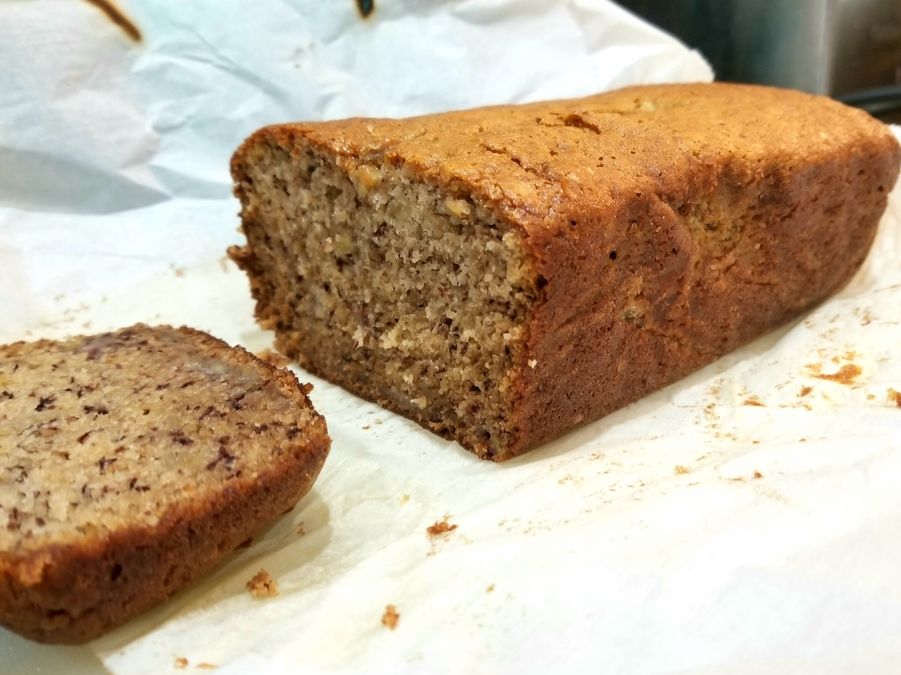

Flour Bakery's Banana Bread
Originally from: https://www.foodnetwork.com/recipes/flours-famous-banana-bread-recipe-2015076
Ingredients
- 210 g (1 2/3 cup) all purpose flour
- 1 tsp baking soda
- 1/4 tsp cinnamon
- 1/2 tsp salt
- 230 g (1 cup + 2 Tbsp) sugar
- 2 large eggs
- 100 g (1/2 cup) canola oil
- 340 g mashed bananas (about 3 large bananas)
- 2 Tbsp sour cream
- 1 tsp vanilla extract
- 2/3 cup toasted walnuts
Directions
- Sift together flour, baking soda, cinnamon, and salt.
- Whip sugar and eggs until light and fluffy (longer than you might think 5 - 10 min)
- Mix in oil to sugar and eggs, then add bananas, sour cream, and vanilla.
- Fold in remaining ingredients. Pour into lined loaf pan and bake 45 minutes to 1 hour.
Notes
-
2020-10-18 - made as above but without walnuts. Turned out good - took over an hour to bake - knife test kept coming up with raw batter. Bananas were just past ripe, bread was nicely sweet and moist, not gummy or overly dense.
